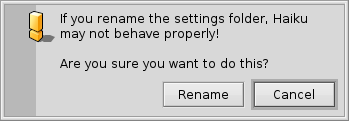
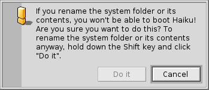

Filesystem layout
Haiku's filesystem layout is quite transparent, trying to always use non-cryptic names for files and folders, that don't leave the user guessing. Files and folders that are important for the system to function properly, are protected from accidental tempering by showing one of these alerts:
 The second alert pops up if you try to rename or delete something in the system hierarchy. Here, the "" button will only become clickable when you're holding down the SHIFT key.
Generally, there are two separate branches springing from the root folder of the boot volume:
| /boot/system/ | Contains system files and applications/packages shared by all users. | |
| /boot/home/ | This is your personal folder where you keep your data and settings and the applications/packages that are not shared by all users. |
As long as Haiku isn't multi-user, this distinction between shared and not-shared applications/packages has no apparent effect, as there's only one user with one home folder. But since there will be support for more users than one eventually, it makes sense to learn the right way from the start.
 The system folder - /boot/system/
The system folder - /boot/system/
Under Haiku's predecessor BeOS, this folder was named /boot/beos/. You may still find it in some older documentation (e.g. in the original BeBook).
Most of the folders inside /boot/system/ are read-only, which is sensible as they contain the files necessary for Haiku to function correctly and therefore have to be safe from (accidental) alteration. The only user-writable folders are:
| /boot/system/cache/ | Contains cached files and the temporary folder linked to /tmp/. | |
| /boot/system/non-packaged/ | Contains a hierarchy for files that aren't part of a .hpkg (probably from old BeOS archives). | |
| /boot/system/packages/ | Besides holding Haiku's system packages, you can add/remove packages shared by all users. | |
| /boot/system/settings/ | Contains system-wide settings. | |
| /boot/system/var/ | Contains logs like the syslog (important when troubleshooting) and is the default location for the swap file. |
For more information on the packages and non-packaged folders, see topic Applications.
The home folder - /boot/home/
This folder belongs to you. Here you can create and delete files and folders as you wish. (By the way, the tilde ("~") is a shortcut for your home folder, so you don't always have to write "/boot/home/" in Terminal.)
Files that you'd like to share with other users in a future multi-user environment have do be put outside /boot/home/. For example, you could create a folder /boot/all-users/ and put the stuff there.
| ~/Desktop/ | Holds the files of your desktop. Double-clicking won't open it, as it is already always visible. When your files happen to be obscured by open windows, just switch quickly to another Workspace. Of course, drilling down by right-clicking is also possible. | |
| ~/mail/ | This is the default location for your mails. | |
| ~/people/ | This is the default location for you contact files, see People. | |
| ~/queries/ | Queries are stored here, by default temporarily for 7 days. |
The folder /boot/home/config/ is special: just like /boot/system/ it's mostly under the control of the package management and therefore read-only. It too contains these similar user-writable folders:
| ~/config/packages/ | Here you can add/remove packages that are not shared by all users. | |
| ~/config/non-packaged/ | Contains a hierarchy for files that aren't part of a .hpkg (probably from old BeOS archives) and are not shared by all users. | |
| ~/config/settings/ | This folder contains the settings to all applications and a few configurations for the system. Some applications manage their settings in their own subfolders, others simply put their configuration file in there. |
For more information on the packages and non-packaged folders, see topic Applications.
Here are some of the more interesting subfolders in ~/config/settings/:
| boot/ | This folder is the place for User Scripts that are executed before or after the system boots up or shuts down. | |
| boot/launch/ | Links to programs or documents in this folder are automatically launched on every boot-up. | |
| beos_mime/ | In this MIME database Haiku keeps track of all the different filetypes and their settings. | |
| deskbar/menu/ | Copied or linked to files/folders/queries in this folder appear in the Deskbar menu. | |
| kernel/drivers/ | There's one settings file that may be of interest: kernel offers some low level configurations like disabling SMP, activating serial debugging or enabling advanced power management. You activate a configuration line by removing the commentary symbol "#". Be careful here! | |
| Tracker/ | Besides the various settings files for Tracker, there are some interesting subfolders: | |
| DefaultFolderTemplate/ | Show and arrange all attributes and the window size to your liking. Every new folder you create will use it as a template. | |
| DefaultQueryTemplates/ | You can define the layout of query result windows for certain filetypes. See topic Query: The result window. | |
| Go/ | Put links to your favorite locations in here to make them available e.g. in open and save panels. See topic Haiku's GUI: Favorites and recent folders. | |
| Tracker New Template/ | Add a template for any filetype that's then available from Tracker's menu. See topic Tracker: Working with files. |